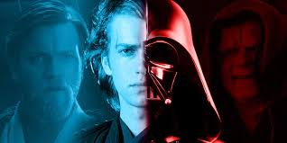

The Debate
Some people think Anakin became Darth Vader when he chose to help Palpatine. Others think it happened later when he put on the suit. This page looks at both sides of the debate.

A page where we will debate when Anakin Skywalker became Darth Vader.
Some people think Anakin became Darth Vader when he chose to help Palpatine. Others think it happened later when he put on the suit. This page looks at both sides of the debate.

This video helps explain the moment Anakin fully turns toward the dark side.
This Tableau graph analyzes Star Wars screen time, which connects to the debate about Anakin Skywalker becoming Darth Vader.